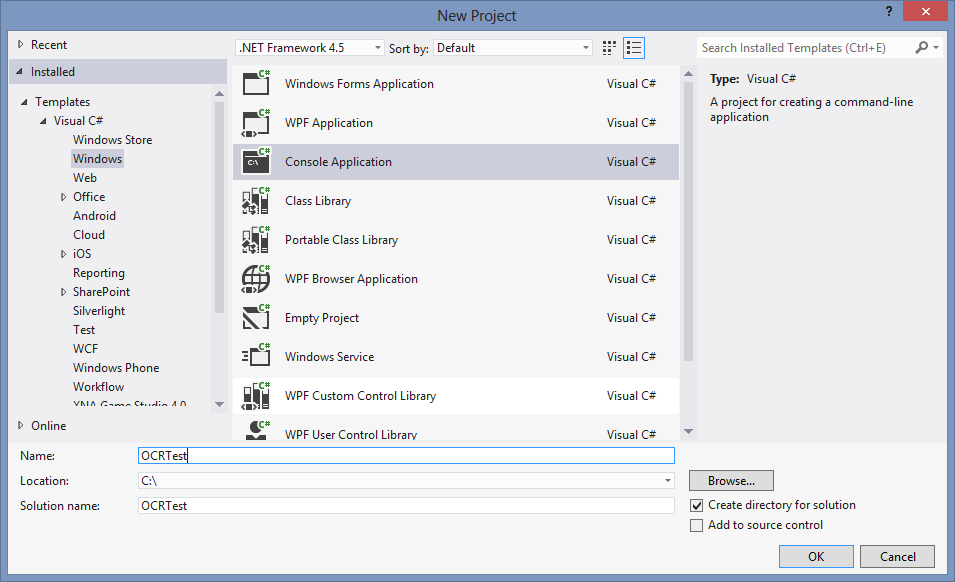
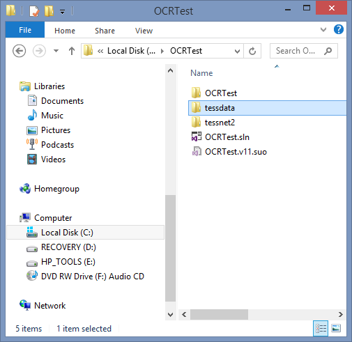
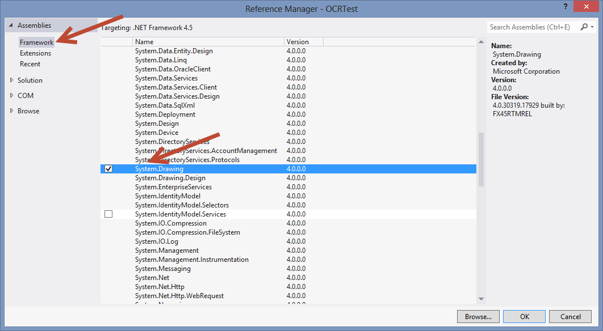
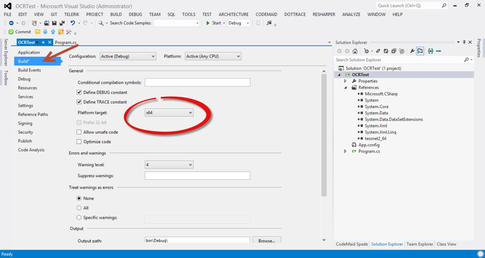
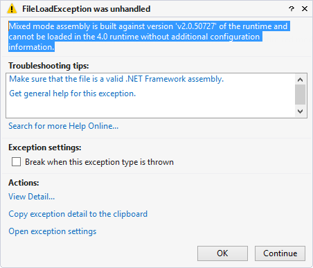

How to use Tessnet2 library
Introduction
This article has the goal to show how to use the Tessnet2 library.
Description
Tessnet2 is a .NET 2.0 Open Source OCR assembly using Tesseract engine. Download binary here.
Another important thing for Tessnet2 work is get the languages packages, get it here for the languages you want. For the sample we are use english language.
Let's start the sample.
Create one console aplication:

Then copy the folder with binaries and languages packages to the same folder.
Note: Don´t forget unzip the languanges packages until have the tessdata folder with eng.DangAmbigs, eng.freq-dawg, eng.inttemp, eng.normproto, eng.pffmtable, eng.unicharset, eng.user-words and eng.word-dawg files.
The aspect should be something like:

Now add the Tessnet2 reference to the project, do a right click in References > Add References > Browse> Select the folder with C:\OCRTest\tessnet2\Release64\tessnet2_64.dll and click Ok.
After add the reference for System.Drawing:

Now we need configure the project to compile in x64, for it Right Click in project> Properties>Build> Platform target

In Program.cs add the following code:
static void Main(string[] args)
{
try
{
var image = new Bitmap(@"C:\OCRTest\number.jpg");
var ocr = new Tesseract();
ocr.SetVariable("tessedit_char_whitelist", "0123456789"); // If digit only
//@"C:\OCRTest\tessdata" contains the language package, without this the method crash and app breaks
ocr.Init(@"C:\OCRTest\tessdata", "eng", true);
var result = ocr.DoOCR(image, Rectangle.Empty);
foreach (Word word in result)
Console.WriteLine("{0} : {1}", word.Confidence, word.Text);
Console.ReadLine();
}
catch (Exception exception)
{
}
}
static void Main(string[] args) { try { var image = new Bitmap(@"C:\OCRTest\number.jpg"); var ocr = new Tesseract(); ocr.SetVariable("tessedit_char_whitelist", "0123456789"); // If digit only //@"C:\OCRTest\tessdata" contains the language package, without this the method crash and app breaks ocr.Init(@"C:\OCRTest\tessdata", "eng", true); var result = ocr.DoOCR(image, Rectangle.Empty); foreach (Word word in result) Console.WriteLine("{0} : {1}", word.Confidence, word.Text); Console.ReadLine(); } catch (Exception exception) { } }
and run the application, this give an error:

to solve this go to directory and change the App.config:
<?xml version="1.0" encoding="utf-8" ?>
<configuration>
<startup useLegacyV2RuntimeActivationPolicy="true">
<supportedRuntime version="v4.0" sku=".NETFramework,Version=v4.5" />
</startup>
</configuration>
<?xml version="1.0" encoding="utf-8" ?> <configuration> <startup useLegacyV2RuntimeActivationPolicy="true"> <supportedRuntime version="v4.0" sku=".NETFramework,Version=v4.5" /> </startup> </configuration>
Update
Make sure you added the right paths to the Program.cs file!! I got the sample and changed the path for image and for tessdata and it works well!!

More Information
sk me on twitter @saramgsilva